Kuma 인스타그램 페이지 시작했당
보스의 왕 충동적 아이디어로
아시아(라고하지만 결국 일본;; 이름도 쿠마니께;;)에서
런던으로 놀러온
5마리 쿠마.......라는 이야기로 ㅋㅋㅋㅋ
덕분에 인스타그램 첨 써보는데
요거 바로바로 반응이 오니까 잼나네용
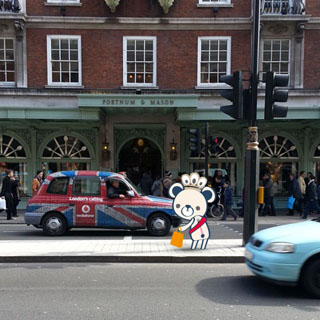
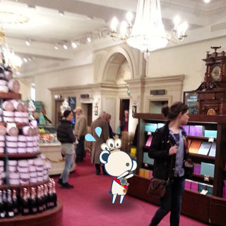
Fortnum & Mason
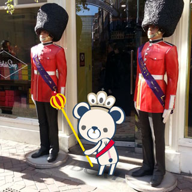
Liberty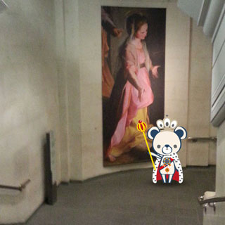
National Gallery
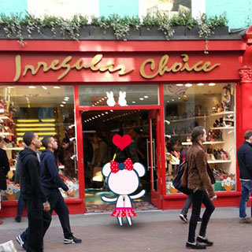
Irregular Choice, Carnaby Street
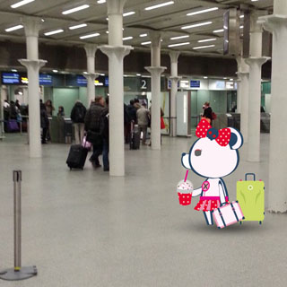
King's Cross St. Pancras
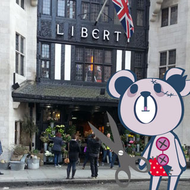
Liberty
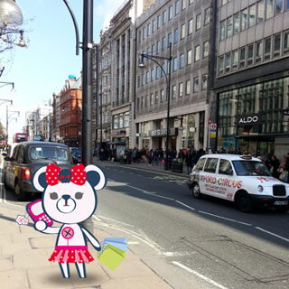
Oxford Circus
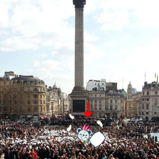
Trafalgar Square
6일날 우연히 pillow fight 구경 :D
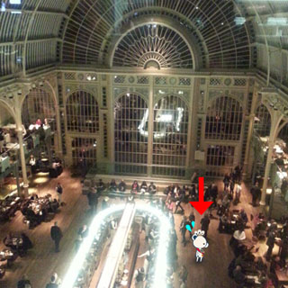
Royal Opera House
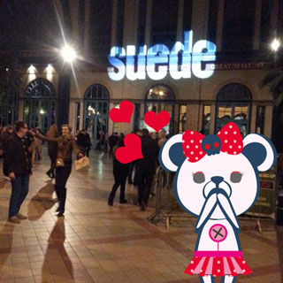
Suede 공연
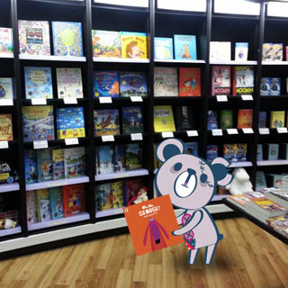
Water Stones
.....평소에 내가 주로 어딜싸돌아 댕기는지
적나라하게 드러난다능;;;
모바일로 찍어서 바로바로 작업가능하니께 좋네욤
덕분에 요새 여기저기 부지런히 사진찍고 댕기는중 ^^